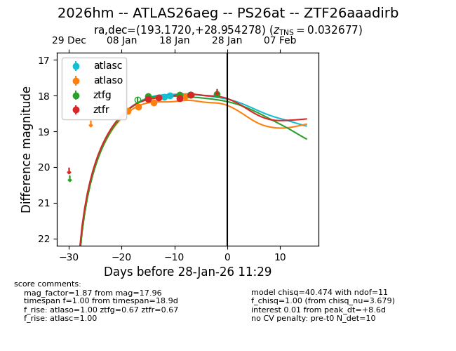
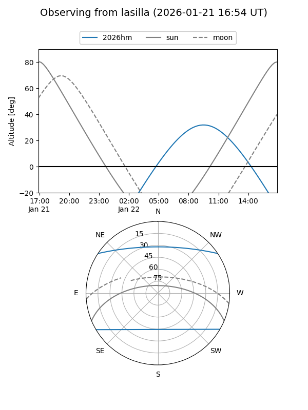
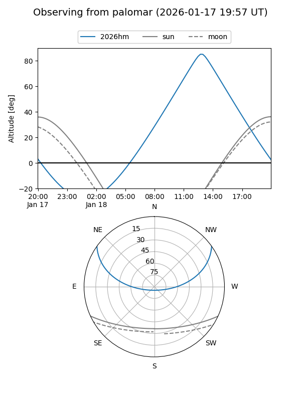
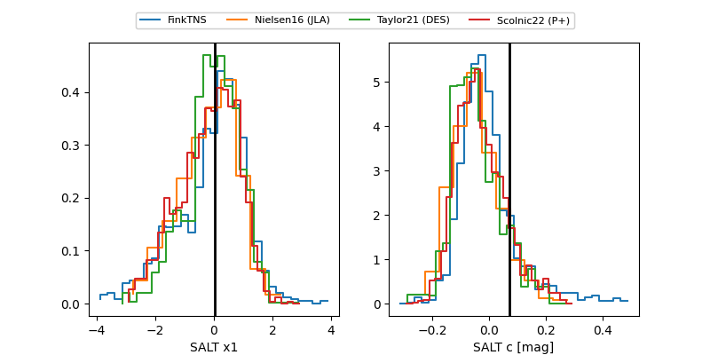

2026hm
Target 2026hm at 2026-01-21 03:36
Aliases and brokers:
FINK: link
Lasair: link
ALeRCE: link
TNS: link
YSE: link
alt names
ZTF26aaadirb (ztf,fink_ztf)
2026hm (tns,yse)
PS26at (panstarrs)
ATLAS26aeg (atlas)
Coordinates:
equatorial (ra, dec) = 193.1720,+28.95428
equatorial (HMS+DMS) = 12:52:41.28,+28:57:15.40
galactic (l, b) = (114.4153,+88.15326)
Flags:
Photometry:
last atlasc=17.99, atlaso=18.19, ztfg=17.98, ztfr=18.08
2 atlasc, 3 atlaso, 2 ztfg, 3 ztfr detections
Lightcurve

Visibility


Additional plots
